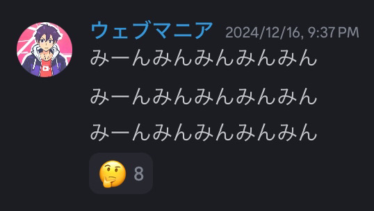

ウェブマニアについて
ハトマニア/ウェブ鳩 2024/12/16
マニアさんの新形態。疲労により人間を辞めて鳩に進化した模様。
セミマニア 2024/12
疲労の第一形態となった ウェブマニア。
「みーんみんみん」とミンミンゼミと化している。

ちゅ♡ 2024/12
とにかくキスをしたがる
おみくじの話題では「大中吉」(だいちゅき)などと発言したり「ひ♡み♡ちゅ♡」や「しゅき♡しゅき♡...」「ちゅ♡」などと連発したり…
ヒト食いマニア 2024/12
なんでも「ﾓｸﾞﾓｸﾞ」してしまう。文字面だけ見るとかわいい。多分人も食う。
ロリマニア 2024/12
※安価※によって名前が変えられてしまったが変える気はなさそうだった（規約のせいにして変えた
マンマニア 2024/12
象のみの※スレッド※へ迷い込んだ反マンモス軍
なお象達から認められている模様
ゴリマニア 2024/12
ウェブマニアの分岐進化の一つ。ゴリラの周りで育てるとゴリマニアになる。
ゾウマニア 2024/12
ウェブマニアの分岐進化の一つ。「ぱぉおぉおおおん」のように興奮しており、ウェブマニアさんを攻めると進化する場合がある。
また、ウェブマニアはゾウ形態のことを違う形態だと話している。
引用元:ウェブマニア公式Discoedサーバー ウェブマニア図鑑